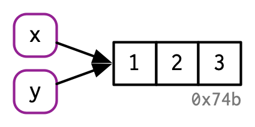
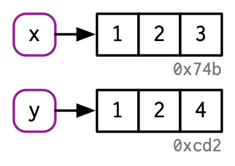
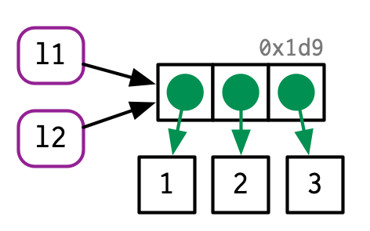
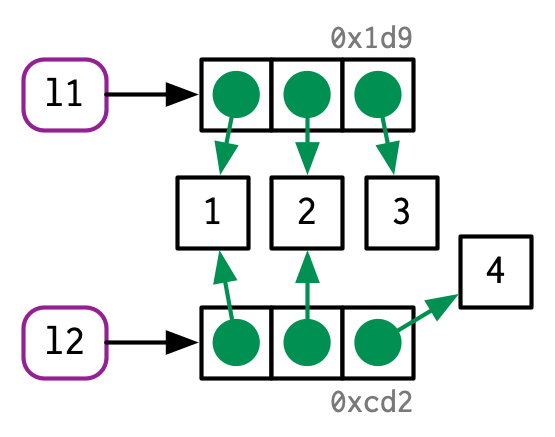
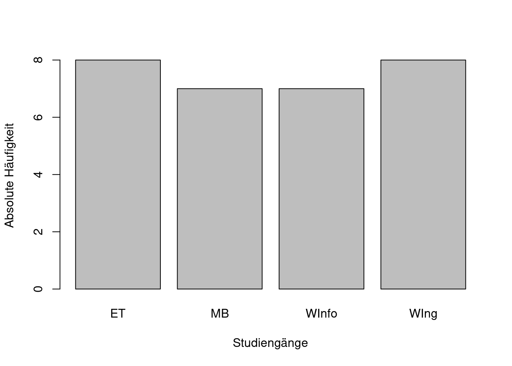
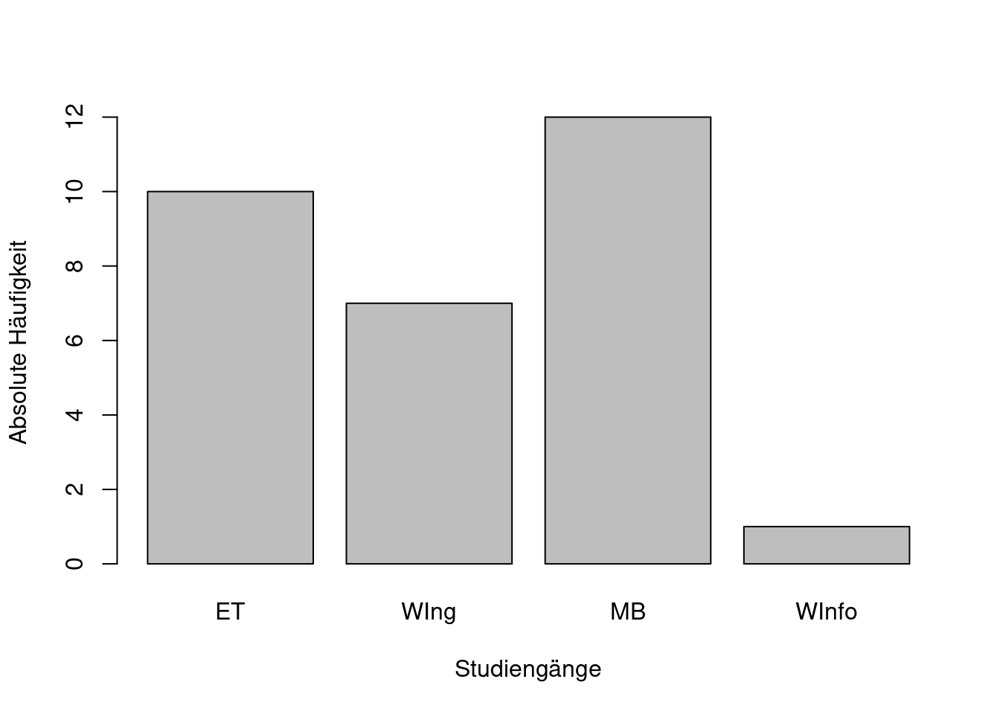
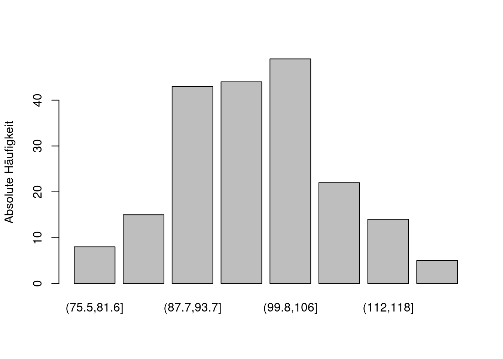
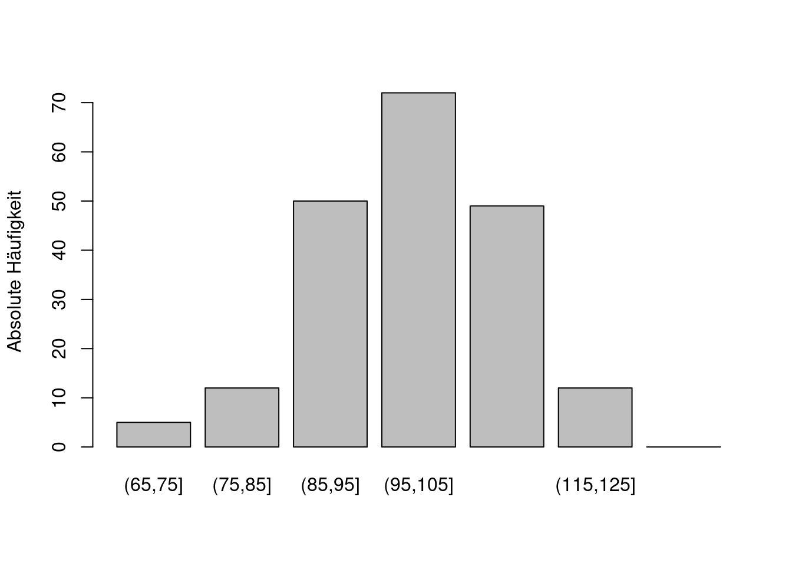
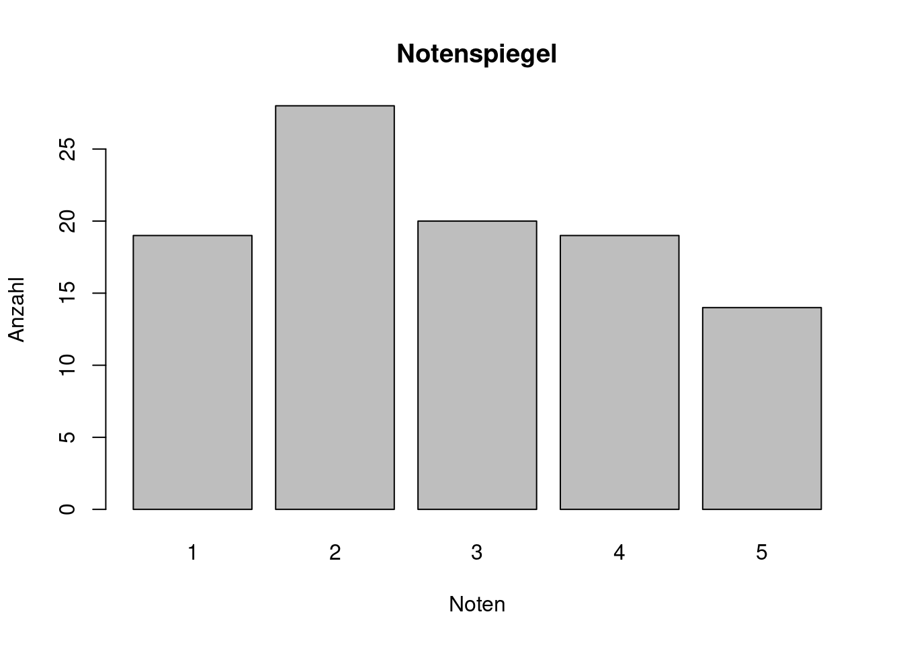

Chapter 5 Weitere Datenstrukturen
Als Nächstes betrachten wir weitere grundlegende Datenstrukturen in R; im Vordergrund hierbei stehen Listen und Data Frames. Die bisher besprochenen Datenstrukturen (atomare) Vektoren, Matrizen und Arrays sind homogene Datenstrukturen: alle Elemente haben den gleichen zugrun-deliegenden Datentyp, der nicht weiter unterteilt werden kann. Er ist entweder logical, integer, double, complex, character oder raw.
Listen und Data Frames sind hingegen heterogen: in ihnen können Objekte unterschiedlicher Datentypen gespeichert werden. Das erste Listenelement kann z. B. ein Vektor der Länge 10 sein, während das zweite Listenelement eine 28×28-Matrix sein kann.
5.1 Listen
Wie wir gesehen haben, können in einem einzelnen (atomaren) Vektor nicht Objekte gespeichert werden, die unterschiedliche Datentypen besitzen; hierzu benutzt man Listen. Eine Liste ist ein linear angeordneter Datencontainer, dessen Elemente auf andere Objekte verweisen; eine Liste kann somit also konzeptionell als ein Vektor von Referenzen aufgefasst werden. Intern ist in R der Datentyp Liste als Vektor implementiert und es gibt strenggenommen in R die Unterscheidung zwischen atomaren und nicht-atomaren Vektoren. Da Listen auch Listen als Elemente enthalten können, die ihrerseits wiederum Listen als Elemente enthalten können, … werden Listen auch manchmal rekursive Vektoren genannt. Wir werden aber bei unserer Konvention bleiben und im Folgenden immer atomare Vektoren meinen, wenn wir von Vektoren reden.
5.1.1 Erzeugung von Listen und Indexierung
Als erstes einfaches Beispiel soll eine Liste in R erzeugt werden, die Prüfungsdaten eines Studenten enthält:
x <- list(nachname = "Meier", matNr = 123456, noten = c (1.3, 2.7))
x## $nachname
## [1] "Meier"
##
## $matNr
## [1] 123456
##
## $noten
## [1] 1.3 2.7Es empfiehlt sich, str() zu benutzen, um eine kompakte und übersichtliche Ausgabe der Liste zu erhalten:
str(x)## List of 3
## $ nachname: chr "Meier"
## $ matNr : num 123456
## $ noten : num [1:2] 1.3 2.7x ist also eine Liste mit drei Elementen; jedes Element hat dabei einen Namen. Das dritte Listenelement zeigt auf einen numerischen Vektor der Länge 2. Weiterhin erhalten wir:
length(x)## [1] 3typeof(x)## [1] "list"class(x)## [1] "list"is.list(x)## [1] TRUEattributes(x)## $names
## [1] "nachname" "matNr" "noten"In vielen Programmiersprachen kann mithilfe der Punktnotation auf ein Listenelement zugegriffen werden. Dies ist in R nicht möglich! In R wird stattdessen das Dollarzeichen benutzt, um über den Namen auf ein Listenelement zuzugreifen:
x.noten
#R> Error: object 'x.noten' not foundx$noten## [1] 1.3 2.7x$matNr## [1] 123456Auch mithilfe des Indexoperators können Listenelemente angesprochen werden, allerdings unterscheidet sich der „einfache“ Indexoperator grundlegend vom „doppelten“ Indexoperator:
x[3]undx[[3]]x["noten"]undx[["noten"]]
str(x["noten"])## List of 1
## $ noten: num [1:2] 1.3 2.7str(x[3])## List of 1
## $ noten: num [1:2] 1.3 2.7str(x[["noten"]])## num [1:2] 1.3 2.7str(x[[3]])## num [1:2] 1.3 2.7str(x$noten)## num [1:2] 1.3 2.7Identische Ergebnisse erhält man jeweils durch:
x$noten,x[["noten"]]undx[[3]].x["noten"]undx[3].
Überraschenderweise geben x["noten"] und x[3] eine Liste zurück. Der einfache Indexopera-tor angewandt auf eine Liste gibt immer eine Teilliste zurück! Will man also das Element einer Liste erhalten, so muss der doppelte Indexoperator benutzt werden. Aus Konsistenzgründen emp-fehlen daher manche Autoren sogar, auch bei Vektoren den doppelten Indexoperator zu benutzen, da es bei Vektoren keinen Unterschied zwischen beiden Schreibweisen gibt:
v <- 1:4
v[[1]]## [1] 1identical(v[1], v[[1]])## [1] TRUExv <- as.list(1, 2, 3, 4)
str(xv)## List of 1
## $ : num 1str(xv[1])## List of 1
## $ : num 1str(xv[[1]])## num 1identical(xv[1], xv[[1]])## [1] FALSEIndizierung kann wie bei Vektoren angewandt werden:
x[1:2]## $nachname
## [1] "Meier"
##
## $matNr
## [1] 123456Hingegen:
x[[1:2]]
#R> Error in x[[1:2]] : subscript out of boundsUnser erstes Listenbeispiel hätte auch ohne Namen erzeugt werden können:
x1 <- list("Meier", 123456, c(1.3, 2.7, 1.0))
x1## [[1]]
## [1] "Meier"
##
## [[2]]
## [1] 123456
##
## [[3]]
## [1] 1.3 2.7 1.0str(x1)## List of 3
## $ : chr "Meier"
## $ : num 123456
## $ : num [1:3] 1.3 2.7 1Aber es ist in der Regel besser und übersichtlicher, Namen zu verwenden. Beachten Sie auch den Unterschied zwischen den nächsten drei einzelnen Anweisungen:
str(list(1:4))## List of 1
## $ : int [1:4] 1 2 3 4str(list(1, 2, 3, 4))## List of 4
## $ : num 1
## $ : num 2
## $ : num 3
## $ : num 4str(as.list(1:4))## List of 4
## $ : int 1
## $ : int 2
## $ : int 3
## $ : int 4Listen können auch Listen als Element haben (und zwar grundsätzlich in „beliebiger“ Verschachtelungstiefe). Dies demonstrieren die nächsten drei Beispiele:
yx <- list(pvl = c(T, T, F), x)
str(yx)## List of 2
## $ pvl: int [1:32] 1 1 100 101 102 4 5 103 104 105 ...
## $ :List of 3
## ..$ nachname: chr "Meier"
## ..$ matNr : num 123456
## ..$ noten : num [1:2] 1.3 2.7yx2 <- list(yx, yx[2])
str(yx2)## List of 2
## $ :List of 2
## ..$ pvl: int [1:32] 1 1 100 101 102 4 5 103 104 105 ...
## ..$ :List of 3
## .. ..$ nachname: chr "Meier"
## .. ..$ matNr : num 123456
## .. ..$ noten : num [1:2] 1.3 2.7
## $ :List of 1
## ..$ :List of 3
## .. ..$ nachname: chr "Meier"
## .. ..$ matNr : num 123456
## .. ..$ noten : num [1:2] 1.3 2.7yx3 <-list(list(list(T)))
str(yx3)## List of 1
## $ :List of 1
## ..$ :List of 1
## .. ..$ : logi TRUEUm aus einer verschachtelten Liste wieder einen „flachen“ Vektor zu erhalten, der alle atomaren Komponenten der Liste enthält, kann die Funktion unlist() benutzt werden:
unlist(yx2)## pvl1 pvl2 pvl3 pvl4 pvl5 pvl6 pvl7 pvl8
## "1" "1" "100" "101" "102" "4" "5" "103"
## pvl9 pvl10 pvl11 pvl12 pvl13 pvl14 pvl15 pvl16
## "104" "105" "9" "10" "11" "12" "13" "14"
## pvl17 pvl18 pvl19 pvl20 pvl21 pvl22 pvl23 pvl24
## "15" "16" "17" "18" "19" "20" "21" "22"
## pvl25 pvl26 pvl27 pvl28 pvl29 pvl30 pvl31 pvl32
## "23" "24" "25" "26" "27" "28" "29" "30"
## nachname matNr noten1 noten2 nachname matNr noten1 noten2
## "Meier" "123456" "1.3" "2.7" "Meier" "123456" "1.3" "2.7"5.1.2 Listen ändern
Wir haben bereits gesehen, wie auf einzelne Listenelemente zugegriffen werden kann. Listen können in natürlicherweise durch Zuweisungen geändert werden. Elemente können gelöscht werden, indem sie den Wert NULL erhalten.
Wir betrachten wieder unser einführendes Beispiel:
str(x)## List of 3
## $ nachname: chr "Meier"
## $ matNr : num 123456
## $ noten : num [1:2] 1.3 2.7Ein Vorname soll eingefügt, die Matrikelnummer geändert und die Noten gelöscht werden:
x$vorname <- "Udo"
x[[2]] <- 222333 # besser ?: x[["matNr"]] <- 222333
x$noten <- NULL
str(x)## List of 3
## $ nachname: chr "Meier"
## $ matNr : num 222333
## $ vorname : chr "Udo"Durch Kombination von Listen und Vektoren können Listen auch mit der bereits bekannten Funktion c() erstellt werden:
z <- list(11, 12, 13)
z1 <- c(z, c(14, 15))
str(z1)## List of 5
## $ : num 11
## $ : num 12
## $ : num 13
## $ : num 14
## $ : num 15z2 <- c(c(14, 15), z)
str(z2)## List of 5
## $ : num 14
## $ : num 15
## $ : num 11
## $ : num 12
## $ : num 13Vergleichen Sie dies mit den folgenden beiden Anweisungen:
z3 <- list(z, c(11, 12, 13))
str(z3)## List of 2
## $ :List of 3
## ..$ : num 11
## ..$ : num 12
## ..$ : num 13
## $ : num [1:3] 11 12 13z <- list(11, 12, 13)
str(z)## List of 3
## $ : num 11
## $ : num 12
## $ : num 13z[4:5] <- c(14, 15)
str(z)## List of 5
## $ : num 11
## $ : num 12
## $ : num 13
## $ : num 14
## $ : num 15Frage:
- Sind jetzt
zundz1identisch?
5.1.3 Vergleich: Liste versus Vektor
Wir wollen noch einmal kurz Listen und Vektoren gegenüberstellen und dabei insbesondere den Effekt von Copy-on-modify betrachten. Die im Folgenden benutzten Diagramme und die zugehörigen Beispiele sind aus Wickham (2019), Kapitel 2 entnommen.
x <- c(1, 2, 3)
y <- xWie wir bereits in Kapitel 3 erläutert haben, sind nun beide Namen (x und y) an dasselbe Objekt gebunden:

Figure 5.1: Abbildung aus Wickham (2019).
Wird y geändert,
y[3] <- 4dann „zeigen“ x und y auf verschiedene Objekte:

Figure 5.2: Abbildung aus Wickham (2019).
Wie sieht die vergleichbare Situation bei Listen aus?
l1 <- list(1, 2, 3)
l2 <- l1Da eine Liste ein linear angeordneter Datencontainer ist, dessen Elemente auf andere Objekte verweisen und der als ein Vektor von Referenzen aufgefasst werden kann, ergibt sich im Ver-gleich zum Vektor eine andere interne Implementierung. Dies wird im folgenden Diagramm deutlich:

Figure 5.3: Abbildung aus Wickham (2019).
Ändern wir l2,
l2[[3]] <- 4dann ergibt sich folgendes Bild:

Figure 5.4: Abbildung aus Wickham (2019).
5.1.4 lapply() und sapply()
Die Funktion lapply() (für list apply) bezieht sich auf Listen und entspricht der Funktion apply(). Sie wird auf Listen angewandt (oder auf Vektoren die in Listen umgewandelt werden), während apply() auf Matrizen angewandt wird. Zur Illustration wollen wir folgendes Beispiel betrachten:
l <- list(9:0, 1:100, 4)
str(l)## List of 3
## $ : int [1:10] 9 8 7 6 5 4 3 2 1 0
## $ : int [1:100] 1 2 3 4 5 6 7 8 9 10 ...
## $ : num 4Mithilfe von lapply() können wir die mean()-Funktion auf alle Listenelemente anwenden:
lapply(X = l, FUN = mean)## [[1]]
## [1] 4.5
##
## [[2]]
## [1] 50.5
##
## [[3]]
## [1] 4Das Ergebnis ist wiederum eine Liste.
Die benutzerfreundlichere Version sapply() (für simplified list apply) kann ebenfalls auf Listen angewandt werden; sie gibt in der Regel eine homogene Datenstruktur wie Vektor oder Matrix zurück. In unserem Beispiel ist dies ein Vektor:
sapply(X = l, FUN = mean)## [1] 4.5 50.5 4.0sapply() kann aber auch eine Matrix zurückgeben:
sapply(X = l, FUN = range)## [,1] [,2] [,3]
## [1,] 0 1 4
## [2,] 9 100 4Vergleichen Sie hierzu:
lapply(X = l, FUN = range)## [[1]]
## [1] 0 9
##
## [[2]]
## [1] 1 100
##
## [[3]]
## [1] 4 4Kurzzusammenfassung
list()[],[[ ]],$is.list(),as.list()unlist()lapply(),sapply()
5.2 Factor
Mithilfe von Faktoren ist es in R möglich, nominalskalierte oder ordinalskalierte Daten zu bearbeiten.
Fragen:
Was sind nominalskalierte Daten?
Was sind ordinalskalierte Daten?
Was sind kardinalskalierte Daten?
Als Beispiel wollen wir einen Datensatz data betrachten, der aus 30 nominalskalierten Werten besteht, die den belegten Studiengang Maschinenbau (MB), Elektrotechnik (ET), Wirtschaftsinge-nieur (WIng) und Wirtschaftsinformatik (WInfo) von 30 Studierenden angibt:
studiengang <- c("MB", "ET", "WIng", "WInfo")
data <- sample(x = studiengang, size = 30, replace = TRUE)
data## [1] "WIng" "MB" "ET" "ET" "MB" "WInfo" "ET" "MB" "MB"
## [10] "WIng" "WIng" "WIng" "MB" "WInfo" "WIng" "ET" "ET" "WIng"
## [19] "WInfo" "WInfo" "ET" "ET" "WIng" "MB" "MB" "WIng" "MB"
## [28] "ET" "MB" "WInfo"str(data)## chr [1:30] "WIng" "MB" "ET" "ET" "MB" "WInfo" "ET" "MB" "MB" "WIng" "WIng" ...Der Datensatz data besitzt vier unterschiedliche Kategorien: “MB”, “ET”, “WIng”, “WInfo”, die wir im Folgenden, wie in R üblich, als Level bezeichnen wollen. Somit können wir den Datensatz auch als einen integer-Vektor der Länge 30 interpretieren, der nur die Werte 1, 2, 3 und 4 enthält. Genau dies erreichen wir mit einer Umwandlung in einen Faktor:
f1 <- factor(data)
f1## [1] WIng MB ET ET MB WInfo ET MB MB WIng WIng WIng
## [13] MB WInfo WIng ET ET WIng WInfo WInfo ET ET WIng MB
## [25] MB WIng MB ET MB WInfo
## Levels: ET MB WInfo WIngstr(f1)## Factor w/ 4 levels "ET","MB","WInfo",..: 4 2 1 1 2 3 1 2 2 4 ...levels(f1)## [1] "ET" "MB" "WInfo" "WIng"attributes(f1)## $levels
## [1] "ET" "MB" "WInfo" "WIng"
##
## $class
## [1] "factor"Mit der Funktion levels() können wir die entsprechenden Level erhalten, die bei der Umwand-lung automatisch erzeugt wurden. Wenn wir wollen, dass “MB” für 1, “ET” für 2, “WIng” für 3 und “WInfo” für 4 steht, dann müssen wir die Level explizit in der entsprechenden Reihenfolge angeben:
f2 <- factor(data, c("MB", "ET", "WIng", "WInfo"))
str(f2)## Factor w/ 4 levels "MB","ET","WIng",..: 3 1 2 2 1 4 2 1 1 3 ...Wenn wir uns stattdessen auf nur drei Level beschränken, dann erhalten wir entsprechende NA-Werte:
f3 <- factor(data, c("MB", "ET", "WIng"))
str(f3)## Factor w/ 3 levels "MB","ET","WIng": 3 1 2 2 1 NA 2 1 1 3 ...Um aus einem Faktor wieder einen Vektor zu erzeugen, gibt es verschiedene Möglichkeiten, die allerdings zu unterschiedlichen Ergebnissen führen:
str(as.vector(f1))## chr [1:30] "WIng" "MB" "ET" "ET" "MB" "WInfo" "ET" "MB" "MB" "WIng" "WIng" ...str(as.numeric(f1))## num [1:30] 4 2 1 1 2 3 1 2 2 4 ...str(levels(f1)[f1])## chr [1:30] "WIng" "MB" "ET" "ET" "MB" "WInfo" "ET" "MB" "MB" "WIng" "WIng" ...Mithilfe der Funktion table() kann ein Faktor auch in Tabellenform angezeigt werden:
table(f1)## f1
## ET MB WInfo WIng
## 8 9 5 8Ein ähnliches Ergebnis erhält man auch mit der generischen Funktion summary():
summary(f1)## ET MB WInfo WIng
## 8 9 5 8Mit der Funktion barplot(), mit der leicht Balkendiagramme erzeugt werden können, können die Daten aus f1 visualisiert werden. barplot(table(f1)) liefert folgendes Balkendiagramm:
barplot(table(f1), xlab = "Studiengänge", ylab = "Absolute Häufigkeit")
Figure 5.5: Balkendiagramm basierend auf der Variablen f1.
Die Daten in f1 sind nominalskaliert, jedoch nicht ordinalskaliert. Daher ist die folgende Fehler-meldung nicht überraschend:
min(f1)
#R> Error in Summary.factor(c(2L, 4L, 2L, 4L, 1L, 4L, 4L, 2L, 1L, 4L, 3L, :
#R> ‘min’ not meaningful for factorsAllerdings ist R hier nicht konsequent, da f1 sortiert werden kann:
sort(f1)## [1] ET ET ET ET ET ET ET ET MB MB MB MB
## [13] MB MB MB MB MB WInfo WInfo WInfo WInfo WInfo WIng WIng
## [25] WIng WIng WIng WIng WIng WIng
## Levels: ET MB WInfo WIngEin Faktor kann aber auch mit ordinalskalierten Daten umgehen. Angenommen wir haben in unseren Studiengängen eine feste Reihenfolge vorgegeben, wie
“ET” < “WIng” < “MB” < “WInfo”.
Mit der option ordered = TRUE können wir dies mit einbringen:
f4 <- factor(data, levels= c( "ET", "WIng","MB", "WInfo"), ordered = TRUE)und erhalten dann:
min(f4)## [1] ET
## Levels: ET < WIng < MB < WInforange(f4)## [1] ET WInfo
## Levels: ET < WIng < MB < WInfosort(f4)## [1] ET ET ET ET ET ET ET ET WIng WIng WIng WIng
## [13] WIng WIng WIng WIng MB MB MB MB MB MB MB MB
## [25] MB WInfo WInfo WInfo WInfo WInfo
## Levels: ET < WIng < MB < WInfoDas entsprechende Balkendiagramm berücksichtigt dann auch die vorgegebene Reihenfolge:
barplot(table(f4), xlab = "Studiengänge", ylab = "Absolute Häufigkeit")
Figure 5.6: Balkendiagramm basierend auf der Variablen f4.
Um kardinalskalierte Daten in Bereiche aufzuteilen, kann die Funktion cut() benutzt werden, die aus einem numerischen Vektor einen Faktor erzeugt. Wir wollen dies kurz an einem Beispiel illustrieren. Der Vektor punkte soll hierbei die Anzahl der erreichten Punkte in einer Klausur mit 200 Teilnehmern simulieren:
punkte <- rnorm(200, mean = 100, sd = 10)
summary(punkte)## Min. 1st Qu. Median Mean 3rd Qu. Max.
## 73.58 92.08 100.11 99.45 106.88 123.26Im einfachsten Fall können wir den Wertebereich in 8 gleich große Bereiche unterteilen:
c1 <- cut(punkte, breaks = 8)
str(c1)## Factor w/ 8 levels "(73.5,79.8]",..: 3 6 1 4 6 3 6 3 3 3 ...table(c1)## c1
## (73.5,79.8] (79.8,86] (86,92.2] (92.2,98.4] (98.4,105] (105,111]
## 7 12 32 34 52 39
## (111,117] (117,123]
## 18 6barplot(table(c1), ylab = "Absolute Häufigkeit")
Figure 5.7: Balkendiagramm basierend auf der Variablen c1.
Für die einzelnen Level wurde die mathematische Notation für halboffene Intervalle (a,b] benutzt. Es ist aber auch möglich, die einzelnen Bereiche explizit anzugeben:
c2 <- cut(punkte, breaks = seq(from = 65, to = 135, by = 10))
str(c2)## Factor w/ 7 levels "(65,75]","(75,85]",..: 3 5 1 4 4 3 5 3 3 3 ...table(c2)## c2
## (65,75] (75,85] (85,95] (95,105] (105,115] (115,125] (125,135]
## 5 12 50 72 49 12 0barplot(table(c2), ylab = "Absolute Häufigkeit")
Figure 5.8: Balkendiagramm basierend auf der Variablen c2.
Kurzzusammenfassung
factor(),levels(),ordered = TRUEbarplot(),table()cut()
5.3 Data Frame
Viele Datensätze liegen in Form von Tabellen vor, da Tabellen oft als grundlegende Datenstruktur eingesetzt werden. Dies ist zum Beispiel der Fall bei relationalen Datenbanken: aus konzeptioneller oder externer Sicht betrachtet, bestehen Datensätze in relationalen Datenbanken aus Tabellen . Auch in der Statistik werden Tabellen betrachtet: üblich ist es, dass dann die Spalten Variablen und die Zeilen Beobachtungen (Observationen) entsprechen.
Wie wir sehen werden, besitzt R mit Data Frame eine mächtige Datenstruktur, die aus konzeptio-neller Sicht einer Tabelle entspricht. Da eine Tabelle (und somit ein Data Frame) aus Zeilen und Spalten besteht, also zweidimensional ist, ist sie ähnlich zu einer Matrix. Aber es gibt einen be-deutenden Unterschied zwischen einer Matrix und einer Tabelle: in einer Tabelle können den einzelnen Spalten unterschiedliche Datentypen zugrunde liegen; eine Matrix hingegen ist homogen. Intern ist ein Data Frame im einfachsten Fall eine Liste mit der einschränkenden Bedingung, dass jedes Listenelement ein Vektor gleicher Länge ist. Insgesamt finden wir in R also folgende grundlegende Datenstrukturen vor:
| Dimension | homogen | storage.mode |
|---|---|---|
| 1 | vector, factor | list |
| 2 | matrix | data frame |
| n | array |
Wir unterscheiden hier zwischen Dimension und Länge! Zum Beispiel betrachten wir einen (atomaren) Vektor als eine eindimensionale Datenstruktur, der allerdings eine beliebig große Länge haben kann.
5.3.1 Data Frame erzeugen
Als nächstes Beispiel wollen wir folgenden Datensatz betrachten:
| n | Messung 1 | Messung 2 | Messung 3 | Messung 4 |
|---|---|---|---|---|
| 4e+07 | 3.656 | 3.781 | 3.719 | 3.766 |
| 5e+07 | 4.672 | 4.735 | 4.719 | 4.688 |
| 6e+07 | 5.719 | 5.672 | 5.672 | 5.625 |
| 7e+07 | 6.720 | 6.782 | 6.688 | 6.610 |
| 8e+07 | 7.641 | 7.673 | 7.704 | 7.750 |
| 9e+07 | 8.750 | 8.798 | 9.048 | 8.735 |
Dieser Datensatz enthält für sechs unterschiedliche \(n\)-Werte jeweils vier Zeitmessungen. Gemessen wurde dabei, wie lange eine bestimmte Implementierung des Quicksort-Algorithmus auf einem gegebenen Rechner braucht, um \(n\) ganze Zahlen zu sortieren. Die zu sortierenden Daten wurden vor jeder einzelnen Zeitmessung „zufällig“ erzeugt.
Die entsprechenden Werte wurden in einer CSV-Datei „zeiten1.csv“ hinterlegt.
Wir können den Datensatz dieser Datei leicht in R einlesen, vorausgesetzt die Datei „zeiten1.csv“ befindet sich im Arbeitsverzeichnis:
df1 <- read.csv2("zeiten1.csv")
df1## n Messung.1 Messung.2 Messung.3 Messung.4
## 1 40000000 3.656 3.781 3.719 3.766
## 2 50000000 4.672 4.735 4.719 4.688
## 3 60000000 5.719 5.672 5.672 5.625
## 4 70000000 6.720 6.782 6.688 6.610
## 5 80000000 7.641 7.673 7.704 7.750
## 6 90000000 8.750 8.798 9.048 8.735Zum Einlesen wurde die Funktion read.csv2() benutzt, eine Variante der Funktion read.table(). Die Funktion read.table() ist die Standardfunktion in R zum Einlesen von Tabellendaten. Abgesehen von bereits für CSV-Dateien geeignet gesetzten Defaultwerten, sind die beiden Varianten read.csv() und read.csv2() identisch zu read.table(). Die Funktion read.csv2() eignet sich besonders für Dateien, in denen das Komma als Dezimaltrennzeichen und das Semikolon als Datentrennzeichen benutzt wird; genau dies ist bei unserer Datendatei „zeiten1.csv“ der Fall.
df1 ist nun ein Data Frame bestehend aus 5 Variablen (der Anzahl „n“ plus vier Messvariablen) und 6 Observationen:
str(df1)## 'data.frame': 6 obs. of 5 variables:
## $ n : int 40000000 50000000 60000000 70000000 80000000 90000000
## $ Messung.1: num 3.66 4.67 5.72 6.72 7.64 ...
## $ Messung.2: num 3.78 4.74 5.67 6.78 7.67 ...
## $ Messung.3: num 3.72 4.72 5.67 6.69 7.7 ...
## $ Messung.4: num 3.77 4.69 5.62 6.61 7.75 ...Die Namen der Spaltenvariablen sind mit leichter Veränderung aus den Daten der Datei übernommen worden:
names(df1)## [1] "n" "Messung.1" "Messung.2" "Messung.3" "Messung.4"Ein Data Frame kann natürlich auch explizit erzeugt werden. Hierzu benutzen wir die Funktion data.frame():
n <- (4:9) * 1e7L
mess1 <- c(3.656, 4.672, 5.719, 6.720, 7.641, 8.750)
mess2 <- c(3.781, 4.735, 5.672, 6.782, 7.673, 8.798)
mess3 <- c(3.719, 4.719, 5.672, 6.688, 7.704, 9.048)
mess4 <- c(3.766, 4.688, 5.625, 6.610, 7.750, 8.735)
df2 <- data.frame(n, mess1, mess2, mess3, mess4)Interessant ist, dass die Namen der Argumente aus dem Funktionsaufruf
data.frame(n, mess1, mess2, mess3, mess4) direkt übernommen werden, wenn kein Name explizit angegeben wird.
Wie wir sehen, sind die beiden Data Frames df1 und df2 nahezu identisch:
str(df2)## 'data.frame': 6 obs. of 5 variables:
## $ n : int 40000000 50000000 60000000 70000000 80000000 90000000
## $ mess1: num 3.66 4.67 5.72 6.72 7.64 ...
## $ mess2: num 3.78 4.74 5.67 6.78 7.67 ...
## $ mess3: num 3.72 4.72 5.67 6.69 7.7 ...
## $ mess4: num 3.77 4.69 5.62 6.61 7.75 ...Sie unterscheiden sich lediglich in den Namen:
names(df2)## [1] "n" "mess1" "mess2" "mess3" "mess4"Allerdings muss bei der Funktion data.frame() eine Besonderheit beachtet werden: in der Standardeinstellung werden character-Vektoren stets in Faktoren umgewandelt! Wir wollen hierzu folgendes Beispiel betrachten:
bezeichnung <- paste("M", 1:6, sep = "")
str(bezeichnung)## chr [1:6] "M1" "M2" "M3" "M4" "M5" "M6"df_a <- data.frame(n, bezeichnung, mess1)
str(df_a)## 'data.frame': 6 obs. of 3 variables:
## $ n : int 40000000 50000000 60000000 70000000 80000000 90000000
## $ bezeichnung: chr "M1" "M2" "M3" "M4" ...
## $ mess1 : num 3.66 4.67 5.72 6.72 7.64 ...In diesem Beispiel wird ein Data Frame erzeugt, bestehend aus den Variablen n, bezeichnung und mess1. Allerdings wurde der character-Vektor bezeichnung in einen Faktor umgewandelt! Dies kann durch das benannte Argument stringsAsFactors verhindert werden:
df_b <- data.frame(n, bezeichnung, mess1, stringsAsFactors = FALSE)
str(df_b)## 'data.frame': 6 obs. of 3 variables:
## $ n : int 40000000 50000000 60000000 70000000 80000000 90000000
## $ bezeichnung: chr "M1" "M2" "M3" "M4" ...
## $ mess1 : num 3.66 4.67 5.72 6.72 7.64 ...5.3.2 Der Indexoperator
Da ein Data Frame eine Liste der Spaltenvariablen ist, können die einzelnen Daten wie bei einer Liste angesprochen werden. Am übersichtlichsten kann über die Namen zugegriffen werden:
str(df1$n)## int [1:6] 40000000 50000000 60000000 70000000 80000000 90000000str(df1$Messung.1)## num [1:6] 3.66 4.67 5.72 6.72 7.64 ...df1$n[2]## [1] 50000000Möglich ist es aber auch, den Indexoperator zu benutzen. Wie bei Listen gibt es auch hier einen gravierenden Unterschied zwischen dem einfachen und dem doppelten Indexoperator. Der einfache Indexoperator angewandt auf ein Data Frame gibt ein Data Frame zurück! Will man einzelne Elemente als Vektor erhalten, so muss ähnlich wie bei Listen der doppelte Indexoperator benutzt werden:
str(df1[1])## 'data.frame': 6 obs. of 1 variable:
## $ n: int 40000000 50000000 60000000 70000000 80000000 90000000str(df1[[1]])## int [1:6] 40000000 50000000 60000000 70000000 80000000 90000000str(df1["n"])## 'data.frame': 6 obs. of 1 variable:
## $ n: int 40000000 50000000 60000000 70000000 80000000 90000000str(df1[["n"]])## int [1:6] 40000000 50000000 60000000 70000000 80000000 90000000Auf einzelne Tabellenwerte kann wie gewohnt zugegriffen werden:
str(df1[2, 1])## int 50000000str(df1[1, 2])## num 3.66Auf den ersten Blick überraschend ist, dass Zugriffe auf Zeilen und Spalten unterschiedliche Datentypen zurückgeben. Zeilen werden als einzelne Observationen aufgefasst, während Spalten sich auf den Datenvektor einer Variablen beziehen:
str(df1[1,]) ## 1. Zeile## 'data.frame': 1 obs. of 5 variables:
## $ n : int 40000000
## $ Messung.1: num 3.66
## $ Messung.2: num 3.78
## $ Messung.3: num 3.72
## $ Messung.4: num 3.77str(df1[,1]) ## 1. Spalte## int [1:6] 40000000 50000000 60000000 70000000 80000000 90000000In unserem Beispiel ist df1[-1] der Teil des Data Frames, der die Messwerte erhält:
str(df1[-1])## 'data.frame': 6 obs. of 4 variables:
## $ Messung.1: num 3.66 4.67 5.72 6.72 7.64 ...
## $ Messung.2: num 3.78 4.74 5.67 6.78 7.67 ...
## $ Messung.3: num 3.72 4.72 5.67 6.69 7.7 ...
## $ Messung.4: num 3.77 4.69 5.62 6.61 7.75 ...In unserem Fall hätten wir auch df1[2:5] statt df1[-1] schreiben können:
identical(df1[-1], df1[2:5])## [1] TRUE5.3.3 apply()
Mithilfe von apply() können wir die Mittelwerte der gemessenen Zeiten ermitteln. Allgemein kann apply() angewandt werden, wenn die beteiligten Spalten denselben Datentyp haben. Die Mittelwerte für die 6 Observationen erhalten wir durch:
apply(X = df1[-1], MARGIN = 1, FUN = mean)## [1] 3.73050 4.70350 5.67200 6.70000 7.69200 8.83275Für \(n\) = 40 000 000 ist also 3.73050 der Mittelwert der 4 Messwerte. Die Mittelwerte für jede der vier Messvariablen erhalten wir hingegen durch:
apply(X = df1[-1], MARGIN = 2, FUN = mean)## Messung.1 Messung.2 Messung.3 Messung.4
## 6.193000 6.240167 6.258333 6.195667Da ein Date Frame eine Liste der Spaltenvariablen ist, kann für die letzte Abfrage auch lapply() oder besser noch sapply() benutzt werden:
sapply(X = df1[-1], FUN = mean)## Messung.1 Messung.2 Messung.3 Messung.4
## 6.193000 6.240167 6.258333 6.1956675.3.4 Filtern, Einfügen und Löschen
Wie bei Matrizen und Listen kann man in Data Frames filtern:
df2$mess1 > 6## [1] FALSE FALSE FALSE TRUE TRUE TRUEdf2$mess1 > df2$mess3## [1] FALSE FALSE TRUE TRUE FALSE FALSEdf2[df2$mess1 > df2$mess3, ]## n mess1 mess2 mess3 mess4
## 3 60000000 5.719 5.672 5.672 5.625
## 4 70000000 6.720 6.782 6.688 6.610Der letzte Funktionsaufruf kann sogar noch kürzer geschrieben werden:
df2[mess1 > mess3,]## n mess1 mess2 mess3 mess4
## 3 60000000 5.719 5.672 5.672 5.625
## 4 70000000 6.720 6.782 6.688 6.610Ähnlich wie bei Matrizen hätte man alternativ auch die Funktion subset() benutzen können.
Als Nächstes wollen wir eine Kopie von df2 erstellen und eine neue Variable diff1 zum Data Frame hinzufügen. Die neue Spaltenvariable soll gleich der Differenz der ersten beiden Messwerte sein:
df3 <- df2
df3$diff1 <- df2$mess2 -df2$mess1
str(df3)## 'data.frame': 6 obs. of 6 variables:
## $ n : int 40000000 50000000 60000000 70000000 80000000 90000000
## $ mess1: num 3.66 4.67 5.72 6.72 7.64 ...
## $ mess2: num 3.78 4.74 5.67 6.78 7.67 ...
## $ mess3: num 3.72 4.72 5.67 6.69 7.7 ...
## $ mess4: num 3.77 4.69 5.62 6.61 7.75 ...
## $ diff1: num 0.125 0.063 -0.047 0.062 0.032 ...Wie bei Matrizen können auch cbind() und rbind() benutzt werden, um neuen Daten an jeder beliebigen Stelle einzufügen:
Nummer <- 1:6
df3 <- cbind(df3[1], Nummer, df3[-1])
str(df3)## 'data.frame': 6 obs. of 7 variables:
## $ n : int 40000000 50000000 60000000 70000000 80000000 90000000
## $ Nummer: int 1 2 3 4 5 6
## $ mess1 : num 3.66 4.67 5.72 6.72 7.64 ...
## $ mess2 : num 3.78 4.74 5.67 6.78 7.67 ...
## $ mess3 : num 3.72 4.72 5.67 6.69 7.7 ...
## $ mess4 : num 3.77 4.69 5.62 6.61 7.75 ...
## $ diff1 : num 0.125 0.063 -0.047 0.062 0.032 ...Auffällig ist, dass der Name „Nummer“ der hinzugefügten Spalte automatisch im Data Frame übernommen wird! Durch df3$diff1 <- NULL wird die Spaltenvariable diff1 wieder gelöscht:
df3$diff1 <- NULL
str(df3)## 'data.frame': 6 obs. of 6 variables:
## $ n : int 40000000 50000000 60000000 70000000 80000000 90000000
## $ Nummer: int 1 2 3 4 5 6
## $ mess1 : num 3.66 4.67 5.72 6.72 7.64 ...
## $ mess2 : num 3.78 4.74 5.67 6.78 7.67 ...
## $ mess3 : num 3.72 4.72 5.67 6.69 7.7 ...
## $ mess4 : num 3.77 4.69 5.62 6.61 7.75 ...Kurzzusammenfassung
data.frame()read.table(),read.csv(),read.csv2()
Übungen - Teil 1
Aufgabe 1
Betrachten Sie folgenden Quelltext:
x <- rnorm(1e4)
h <- hist(x)Welchen Datentyp hat
h?Ist
heine Liste?Was gibt
is.list(h)zurück?Was gibt
is.vector(h)zurück?Welche Elemente hat
h?Welchen Datentyp hat
unlist(h)?
Aufgabe 3
Gegegeben ist:
v <- 1:4
w <- LETTERS[1:8]
l1 <- list(v,T, w[-1])Mit welcher Anweisung können Sie innerhalb der Liste l1 den Buchstaben C (der durch w einfügt wurde) durch den Buchstaben U ersetzen?
Aufgabe 4
Gegeben ist eine Liste l1 der Form:
l1 <- list("1" = 4, "3" = 8, "5" = 12, "7" = 16)Wie können Sie mithilfe von sum()
die Summe der Listenelemente (also 4+8+12+16) bestimmen?
die Summe der Namen der Listenelemente (also 1+3+5+7) bestimmen?
Hinweis: unlist()
Aufgabe 6
Gegeben ist eine Liste l1:
l1 <- list(10:1, "Data Science", c("Data Science", "FH SWF"), c(T, T, F))Was gibt
length(l1)zurück?Bestimmen Sie die Länge des zweiten und des dritten Listenelements.
Wie können Sie mit einem Aufruf die Länge aller Listenelemente als Vektor erhalten?
Aufgabe 7
Ändern Sie die Liste l1 in der vorherigen Aufgabe so, dass str(l1) Folgendes zurückgibt:
str(l1)## List of 4
## $ A: int [1:10] 10 9 8 7 6 5 4 3 2 1
## $ B: chr "Data Science"
## $ C: chr [1:2] "Data Science" "FH SWF"
## $ D: int [1:32] 1 1 100 101 102 4 5 103 104 105 ...Aufgabe 8
Gegeben ist:
set.seed(42)
data <- sample(LETTERS[1:5], 100, replace = TRUE)
f1 <- factor(data, levels = c( "A", "B","C"), ordered = TRUE)
f1## [1] A <NA> A A B <NA> B B A <NA> A <NA> <NA> B B
## [16] C A A C <NA> <NA> <NA> <NA> <NA> B <NA> C B A B
## [31] C B <NA> <NA> B <NA> <NA> <NA> <NA> B B C A <NA> B
## [46] B B <NA> C <NA> B B B <NA> A A <NA> <NA> B A
## [61] <NA> <NA> <NA> A C C <NA> <NA> <NA> <NA> <NA> B B A B
## [76] <NA> <NA> <NA> A <NA> B B C <NA> <NA> C <NA> <NA> A <NA>
## [91] A A <NA> C A B <NA> A <NA> <NA>
## Levels: A < B < C- Ersetzen Sie in
f1den WertBdurchX, so dass sich folgende Ausgabe ergibt:
f1## [1] A <NA> A A X <NA> X X A <NA> A <NA> <NA> X X
## [16] C A A C <NA> <NA> <NA> <NA> <NA> X <NA> C X A X
## [31] C X <NA> <NA> X <NA> <NA> <NA> <NA> X X C A <NA> X
## [46] X X <NA> C <NA> X X X <NA> A A <NA> <NA> X A
## [61] <NA> <NA> <NA> A C C <NA> <NA> <NA> <NA> <NA> X X A X
## [76] <NA> <NA> <NA> A <NA> X X C <NA> <NA> C <NA> <NA> A <NA>
## [91] A A <NA> C A X <NA> A <NA> <NA>
## Levels: A < X < C- Ersetzen Sie in
f1die WerteAundCdurchY.
## [1] "A" "X" "C"## [1] Y <NA> Y Y X <NA> X X Y <NA> Y <NA> <NA> X X
## [16] Y Y Y Y <NA> <NA> <NA> <NA> <NA> X <NA> Y X Y X
## [31] Y X <NA> <NA> X <NA> <NA> <NA> <NA> X X Y Y <NA> X
## [46] X X <NA> Y <NA> X X X <NA> Y Y <NA> <NA> X Y
## [61] <NA> <NA> <NA> Y Y Y <NA> <NA> <NA> <NA> <NA> X X Y X
## [76] <NA> <NA> <NA> Y <NA> X X Y <NA> <NA> Y <NA> <NA> Y <NA>
## [91] Y Y <NA> Y Y X <NA> Y <NA> <NA>
## Levels: Y < X- Löschen Sie in
f1alleNA-Werte:
f1## [1] Y Y Y X X X Y Y X X Y Y Y Y X Y X Y X Y X X X X Y Y X X X Y X X X Y Y X Y Y
## [39] Y Y X X Y X Y X X Y Y Y Y Y Y Y X Y
## Levels: Y < XAufgabe 9
Machen Sie sich mit den Funktionen rev() und unique() vertraut, die im einfachsten Fall auf einen Vektor angewandt werden.
Ist
identical(rev(1:100), 100:1)stets wahr?Gegeben ist:
d <- sample(1:10, 50, replace = TRUE).Ist
identical(sort(unique(d)), 1:10)stets wahr?Bestimmen Sie per Simulation die ungefähre Wahrscheinlichkeit, dass
identical(sort(unique(d)), 1:10)falsch ist.Wie ändert sich diese so ermittelte Wahrscheinlichkeit, wenn man statt den Wert 50, die Werte 10, 20, 30, …, 100 zugrunde legt?
Gegeben ist
f1wie am Beginn der vorherigen Aufgabe. Bestimmen Sierev(f1)undunique(f1).
Übungen - Teil 2
Für die Aufgaben im Teil 2 betrachten wir ein Data Frame student. Erzeugt werden kann student durch:
set.seed(1)
anzahl <- 100
Punkte <- rnorm(anzahl, mean = 65, sd = 20)
Punkte <- as.integer(Punkte)
MatNr <- sample(1E6:1E7-1, anzahl)
names(MatNr) <- sample(c("ET","MB"), anzahl, replace=TRUE)
Bestanden <- F
student <- data.frame(MatNr, Punkte, Bestanden)
student$Stdgang <- names(MatNr)
rm(Punkte, MatNr,Bestanden,anzahl)Die Ausgabe von head(student) lautet:
head(student)## MatNr Punkte X1 X2 X3 X4 X5 X6 Stdgang
## 1 9075256 52 100 103 11 16 21 26 MB
## 2 5998360 68 101 104 12 17 22 27 ET
## 3 7390976 48 102 105 13 18 23 28 MB
## 4 2188111 96 4 9 14 19 24 29 ET
## 5 2972641 71 5 10 15 20 25 30 MB
## 6 7484652 48 100 103 11 16 21 26 ETAufgabe 11
Aus wie vielen Variablen und aus wie vielen Observationen besteht
student?Die Funktionen
head(x)undtail(x)liefern den ersten und letzten Teil vonxzurück. Was wird ausgegeben durch:head(student, n = 10) head(student, n = -95) head(student, n = -93) tail(student)Was wird ausgegeben durch:
student[1] student[2]?
Geben Sie die erste Zeile von
studentaus.Um die Klausur zu bestehen, reichen 50 Punkte. Ändern Sie
studententsprechend!head(student)## MatNr Punkte X1 X2 X3 X4 X5 X6 Stdgang Bestanden ## 1 9075256 52 100 103 11 16 21 26 MB TRUE ## 2 5998360 68 101 104 12 17 22 27 ET TRUE ## 3 7390976 48 102 105 13 18 23 28 MB FALSE ## 4 2188111 96 4 9 14 19 24 29 ET TRUE ## 5 2972641 71 5 10 15 20 25 30 MB TRUE ## 6 7484652 48 100 103 11 16 21 26 ET FALSE
Aufgabe 12
In den Übungen zu Kapitel 4 haben wir bereits die Funktion order() kennengelernt.
Was geben die Funktionen zurück:
order(student$Punkte)order(student$MatNr)order(student$Stdgang)?
Was wird zurückgegeben:
student[order(student$Punkte), ]student[order(student$MatNr), ]student[order(student$Stdgang), ]?
Geben Sie geordnet nach Punkten die Ergebnisse im Studiengang MB aus. Die Ausgabe der ersten zehn Zeilen in unserem Beispiel lautet dann:
## MatNr Punkte X1 X2 X3 X4 X5 X6 Stdgang Bestanden ## 84 7589118 34 4 9 14 19 24 29 MB FALSE ## 35 9742530 37 5 10 15 20 25 30 MB FALSE ## 75 3243959 39 5 10 15 20 25 30 MB FALSE ## 97 4658829 39 101 104 12 17 22 27 MB FALSE ## 54 5707891 42 4 9 14 19 24 29 MB FALSE ## 3 7390976 48 102 105 13 18 23 28 MB FALSE ## 46 6188906 50 100 103 11 16 21 26 MB TRUE ## 72 9286466 50 101 104 12 17 22 27 MB TRUE ## 1 9075256 52 100 103 11 16 21 26 MB TRUE ## 13 1926848 52 102 105 13 18 23 28 MB TRUE
Aufgabe 13
Als Nächstes sollen Noten in student eingefügt werden. Zugrunde liegt das folgende Notenschema:
| Note | Punkte |
|---|---|
| 4 | 50–58 |
| 3 | 59–69 |
| 2 | 70–80 |
| 1 | >= 81 |
Benutzen Sie die Funktion
cut(), um ausstudent$Punkteeinen Faktor zu erzeugen, der als Note instudenteingefügt werden kann. Die Ausgabe der ersten zehn Zeilen in unserem Bespiel lautet dann:head(student, n = 10)## MatNr Punkte X1 X2 X3 X4 X5 X6 Stdgang Bestanden Note ## 1 9075256 52 100 103 11 16 21 26 MB TRUE 4 ## 2 5998360 68 101 104 12 17 22 27 ET TRUE 3 ## 3 7390976 48 102 105 13 18 23 28 MB FALSE 5 ## 4 2188111 96 4 9 14 19 24 29 ET TRUE 1 ## 5 2972641 71 5 10 15 20 25 30 MB TRUE 2 ## 6 7484652 48 100 103 11 16 21 26 ET FALSE 5 ## 7 5912142 74 101 104 12 17 22 27 MB TRUE 2 ## 8 3578183 79 102 105 13 18 23 28 MB TRUE 2 ## 9 4222106 76 4 9 14 19 24 29 ET TRUE 2 ## 10 8963286 58 5 10 15 20 25 30 MB TRUE 4Geben Sie nach Punkten sortiert alle Studierenden aus, die mindestens 48 und höchstens 52 Punkte erhalten haben:
## MatNr Punkte X1 X2 X3 X4 X5 X6 Stdgang Bestanden Note ## 3 7390976 48 102 105 13 18 23 28 MB FALSE 5 ## 6 7484652 48 100 103 11 16 21 26 ET FALSE 5 ## 46 6188906 50 100 103 11 16 21 26 MB TRUE 4 ## 65 5817860 50 5 10 15 20 25 30 ET TRUE 4 ## 72 9286466 50 101 104 12 17 22 27 MB TRUE 4 ## 45 1784475 51 5 10 15 20 25 30 ET TRUE 4 ## 1 9075256 52 100 103 11 16 21 26 MB TRUE 4 ## 13 1926848 52 102 105 13 18 23 28 MB TRUE 4 ## 52 1922892 52 101 104 12 17 22 27 ET TRUE 4Geben Sie nach Punkten sortiert alle Studierenden aus, die mindestens 79 und höchstens 82 Punkte erhalten haben:
## MatNr Punkte X1 X2 X3 X4 X5 X6 Stdgang Bestanden Note ## 8 3578183 79 102 105 13 18 23 28 MB TRUE 2 ## 94 8871878 79 4 9 14 19 24 29 ET TRUE 2 ## 22 9438067 80 101 104 12 17 22 27 MB TRUE 2 ## 40 3007020 80 5 10 15 20 25 30 ET TRUE 2 ## 48 3108410 80 102 105 13 18 23 28 MB TRUE 2 ## 19 8663430 81 4 9 14 19 24 29 MB TRUE 1 ## 50 8606356 82 5 10 15 20 25 30 ET TRUE 1Erstellen Sie für den Notenspiegel ein entsprechendes Balkendiagramm (Benutzt wurden die Argumente:
main = "Notenspiegel",xlab="Noten",ylab="Anzahl"):

Figure 5.9: Balkendiagramm des Notenspiegels.
- Ist
summary(student)hilfreich?